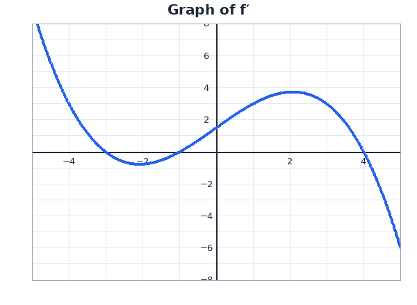
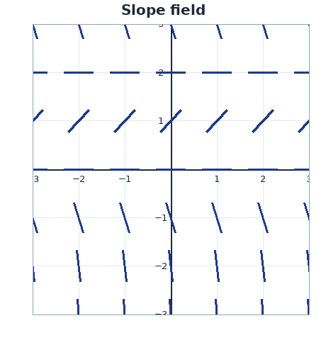

Section I, Part A · Multiple choice · No calculator · 60 minutes
- Find the average value of f(x) = 4sin(x) on [0, π/3].(A)2(B)√3(C)2π/3(D)6/π
- The graph of f′, the derivative of f, is shown. At which x-value(s) does f have a relative minimum?
 (A)x = −4 and x = 4(B)x = 1(C)x = −4 and x = 1 and x = 4(D)x = −3 and x = 5
(A)x = −4 and x = 4(B)x = 1(C)x = −4 and x = 1 and x = 4(D)x = −3 and x = 5 - Which shows the variables of y′ = 4x²/y² correctly separated?(A)y dy = 4x dx(B)dy = 4x² dx(C)(1/y²) dy = 4x² dx(D)y² dy = 4x² dx
- Find d/dx [∫ from -2 to e^x (t² + 1) dt].(A)e^(3x) + e^x(B)e^(3x) + e^x - 5(C)e^(2x) + 1(D)(x² + 1)e^x
- Which function is an antiderivative of f(x) = 6sec(x)² + 6/x?(A)6ln(2x) + 6sin(2x)/cos(2x)(B)12tan(x)sec²(x) - 6/x²(C)6ln|x| + 6sin(x)/cos(x) - 1(D)12ln(x) + 12sin(x)/cos(x)
- A tank holds V(t) = 3t² + 9t liters after t minutes. Find the instantaneous rate of change of V at t = 6.(A)6 L/min(B)162 L/min(C)45 L/min(D)27 L/min
- Find all x where f(x) = -2x³ - 3x² + 36x - 1 has a horizontal tangent line.(A)x = -3 or x = 2(B)x = -3(C)x = 0(D)x = 3 or x = -2
- f is continuous on [-4, 5], f(-4) < 0, and f(5) > 0. Which theorem guarantees a zero in (-4, 5)?(A)Intermediate Value Theorem(B)Mean Value Theorem(C)Squeeze Theorem(D)Extreme Value Theorem
- Evaluate lim (x → 3) (x² - x - 6)/(x² - 8x + 15).(A)does not exist(B)-5/2(C)0(D)-5
- Find f‴(x) for f(x) = 5e^x + 5ln(x).(A)5e^x + 10/x³(B)-5e^x - 10/x³(C)5e^x + 5/x(D)5e^x - 30/x⁴
- The graph of f′ is shown. On which interval(s) is f increasing?

(A)(−3, −1) and (4, ∞)(B)(−∞, −3) and (−1, 4)(C)(−3, ∞)(D)where f′ is increasing - A solid has base bounded by y = √x, the x-axis, and x = 0 to x = 4. Cross sections perpendicular to the x-axis are squares with a side in the base. Find the volume.(A)16(B)16/3(C)8(D)8π
- f′(x) = -x² + 5x. On what interval(s) is f increasing?(A)(0, 5)(B)(-∞, 0) ∪ (5, ∞)(C)(-∞, 5)(D)(0, ∞)
- C′(x) is the marginal cost, in dollars per item, of producing x items. What does ∫ from 2 to 8 C′(x) dx represent (units: dollars)?(A)the average rate of change from x = 2 to x = 8(B)the value of C at x = 8(C)the additional cost of increasing production from 2 to 8 items(D)the rate at x = 8
- Let h(x) = f(g(x)). You know g(4) = 0, g′(4) = 5, f′(4) = 4, and f′(0) = 6. Find h′(4).(A)6(B)20(C)30(D)11
- Which differential equation could produce the slope field shown?

(A)y′ = x − y²(B)y′ = y² − x(C)y′ = xy(D)y′ = y(2 − y) - Does the Mean Value Theorem apply to f(x) = 1/x on [-1, 4]?(A)Yes: f is continuous on the closed interval and differentiable on the open interval(B)No: f is not differentiable at x = 0(C)No: f is not continuous at x = 0(D)No: f(a) must equal f(b)
- Find f′(x) for f(x) = sin(6x² - 3).(A)cos(6x² - 3)(B)12xcos(6x² - 3)(C)12xcos(6x² - 3) + 1(D)-12xcos(6x² - 3)
- On what interval(s) is f(x) = x⁴ + 4x³ - 18x² + 3x concave up?(A)(-∞, -3)(B)(-3, 1)(C)(-∞, -3) ∪ (1, ∞)(D)(1, ∞)
- ∫ from -1 to 3 f(x) dx = 10 and ∫ from 1 to 3 f(x) dx = -1. Find ∫ from -1 to 1 f(x) dx.(A)11(B)9(C)10(D)-11
- Find d/dx [∫ from 2 to x ln(1 + t²) dt].(A)ln(1 + x²) - ln(1 + (2)²)(B)ln(1 + x²)(C)0(D)∫ ln(1 + x²) dx
- Find f′(-1) for f(x) = (4x - 1)³.(A)-125(B)-300(C)600(D)300
- At x = 0, which describes f(x) = x^(2/3)?(A)differentiable (and continuous)(B)continuous but not differentiable (corner)(C)continuous but not differentiable (cusp)(D)not continuous, so not differentiable
- Evaluate lim (x → ∞) √(9x² + x)/(x + 1).(A)0(B)∞(C)1(D)3
- A rectangle has perimeter 256 m. What is the largest possible area?(A)16384 m²(B)4224 m²(C)64 m²(D)4096 m²
- Which limit of a right Riemann sum equals ∫ from 2 to 4 x² dx?(A)lim (n → ∞) Σ (k = 1 to n) (2 + 2k/n)² · (2/n)(B)lim (n → ∞) Σ (k = 1 to n) (2 + k/n)² · (2/n)(C)lim (n → ∞) Σ (k = 1 to n) (2 + 2k/n)² · (1/n)(D)lim (n → ∞) Σ (k = 1 to n) (2k/n)² · (2/n)
- Evaluate ∫ from -6 to 0 2/(x² + 6x + 18) dx.(A)π(B)π/3(C)2π/3(D)4/3
- Find ∫ (x³ + 1/(√x)) dx.(A)(1/4)x⁴ + 2√x + C(B)(1/2)x⁴ + 4√x + C(C)x⁴ + √x + C(D)3x² - 1/(2x√x) + C
- The general solution of y′ = -8y is y = Ce^(-8x). Find C if y(0) = 16.(A)C = 24(B)C = -2(C)C = -128(D)C = 16
- Find ∫ x²(x³ + 7)⁵ dx.(A)(x³/3)(1/6)(x³ + 7)⁶ + C(B)(1/18)(x³ + 7)⁶ + C(C)(1/15)(x³ + 7)⁵ + C(D)(1/6)(x³ + 7)⁶ + C